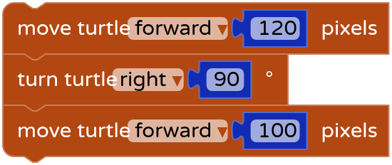

Pilot a rover with turtle commands
Guide a rover around a 2D map. Stop on all three beacons, then bring it back to the landing pad.
Start with the turtle blocks

Predict the route. The rover starts at (0, 0) facing right. Where will it be after the first move? What will the turn change?
Run the route
GDScript
forward(120)
turn_right(90)
forward(100)Rover map
Beacons turn green when you stop on them.
At the landing pad. Facing right. 0 of 3 beacons reached.
How the movement works
A Godot Node2D has a position and a rotation_degrees. Position is a Vector2(x, y). Positive x goes right and positive y goes down. A right turn changes which way the rover faces while it stays in the same spot.
The turtle-style commands in the editor are functions. move_local_x() moves along the node’s own horizontal axis. Once the rover turns right by 90 degrees, that axis points down on the map.
func forward(pixels: float) -> void:
move_local_x(pixels)
func turn_right(degrees: float) -> void:
rotation_degrees += degreesAfter the first move the rover is at (120, 0). After the turn and second move it is at (120, 100), facing down.
Complete the mission
- Add a right turn and a forward move to reach the third beacon at
(0, 100). - Turn again to face the landing pad and move back to
(0, 0). - Change one turn to
45degrees. Predict which way the rover will go, then run it again and compare.
Check the route
Add these four lines after the starter code. The third move goes left 120 pixels and the fourth goes up 100 pixels.
turn_right(90)
forward(120)
turn_right(90)
forward(100)Use it in your own Godot project
Add a Node2D for your character and give it a Sprite2D child with an image facing right. Place the character somewhere visible and attach a script that starts with extends Node2D. Copy the two function definitions into that script, then put your route commands inside _ready(). This runs the whole route immediately in Godot. The browser preview animates each step so you can see it.